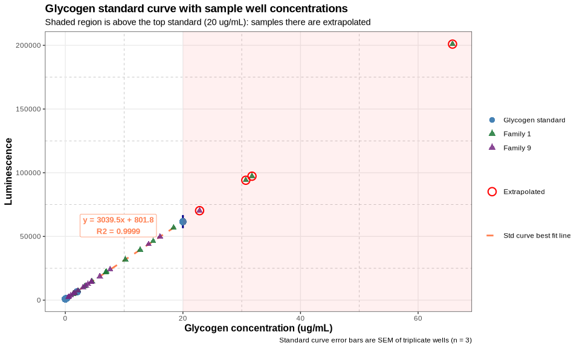
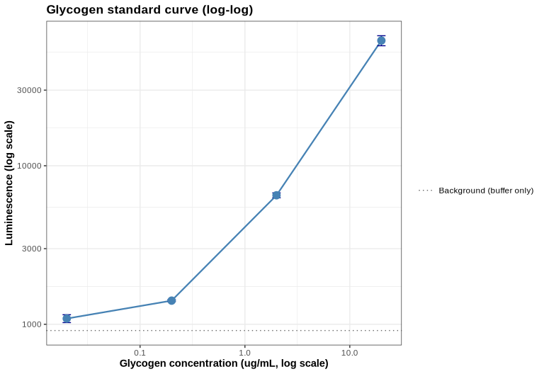
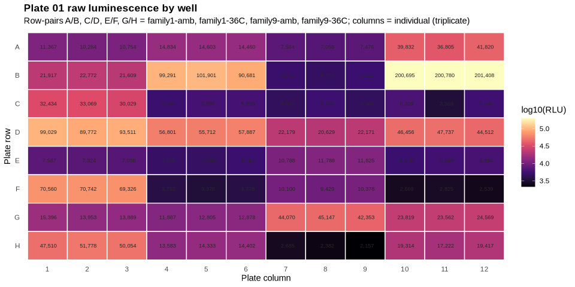
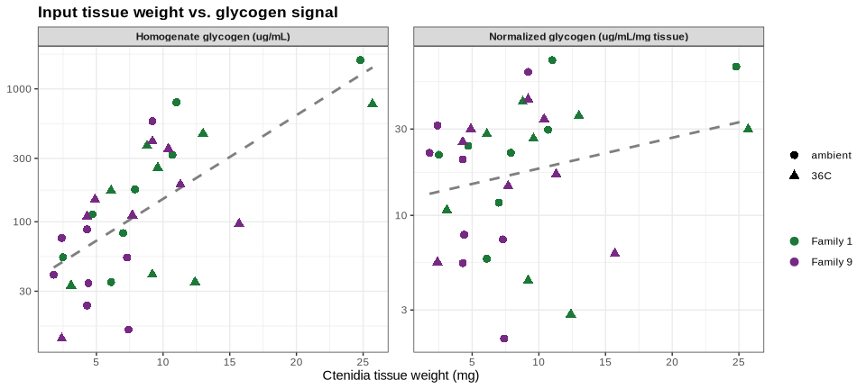
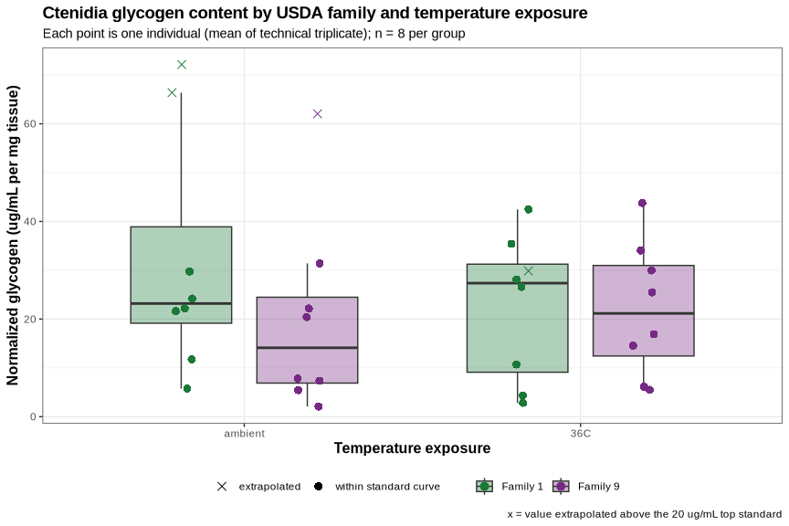
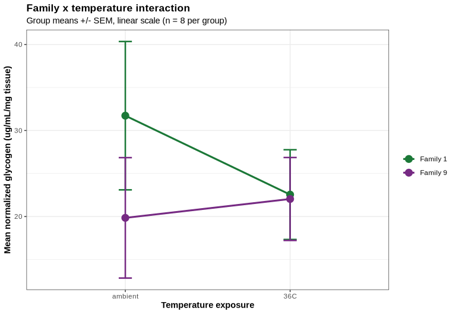

INTRO
As part of the June 2026 SORMI project, I conducted a glycogen assay on Magallana gigas (Pacific oyster) ctenidia samples (ambient and 36°C temperatures) from USDA Families 1 and 9 (chosen by Steven). The purpose of this study was to compare the glycogen content between these two families using the Glycogen Glo Kit. Samples had been previously homogenized on 20260722 (Notebook entry).
All data/code/analysis is available here:
MATERIALS & METHODS
Homogenized ctenidia samples were thawed, vortexed, and spun at 16,000g for 1min to pellet debris. Based on prior work by Hazel (Notebook) the following was decided upon:
dilution of 1:25 should be appropriate for samples to fall within standard curve range
glucose analysis is unnecessary for M.gigas ctenidia samples, as glucose has been shown to be negligible
Dilutions
All samples were diluted 1:25 in dilution buffer (2:1:1 ratio of PBS:0.3N HCl:TRIS). E.g. 4uL of sample + 96uL of dilution buffer. The diluted samples were then used for the glycogen assay.
Glycogen Assay
A standard curve of glycogen (20ug, 2ug, 0.2ug, 0.02ug, 0ug) in PBS was prepared. The assay was performed in triplicate for each sample in a separate 96-well, white Costar plate, and luminescence readings were taken using a HTX Synergy plate reader (Agilent). A negative control (dilution buffer only), in triplicate, was included in the assay to account for background luminescence.
The assay was performed in triplicate for each sample in a 96-well, white Costar plates, and luminescence readings were taken using a HTX Synergy plate reader (Agilent).
The Glycogen Glo Kit protocol was followed according to the manufacturer’s instructions, with appropriate incubation times and reagent additions.
Master Mix Calcs
Digestion Master Mix
| COMPONENT | vol.per.rxn(uL) | no.rxns | total(uL) |
|---|---|---|---|
| glucoamylase buffer | 25 | 125 | 3125 |
| glucoamylase | 0.125 | 125 | 15.625 |
| TOTAL | 3140.625 |
Detection Master Mix
| COMPONENT | vol.per.rxn(uL) | no.rxns | total(uL) |
|---|---|---|---|
| luciferin detection solution | 50 | 125 | 6250 |
| reductase substrate | 0.25 | 125 | 31.25 |
| reductase | 0.25 | 125 | 31.25 |
| NAD | 0.25 | 125 | 31.25 |
| glucose dehydrogenase | 2 | 125 | 250 |
| TOTAL | 6593.75 |
Data Analysis
Data was analyzed in the following R Markdown file:
See the BACKGROUND section below for code/details on the data analysis workflow.
RESULTS
None of the family, temperature, or family × temperature effects are statistically significant at n = 8 per group – excluding the four extrapolated samples changes this picture only slightly (log-scale ANOVA family p = 0.652, temperature p = 0.467, interaction p = 0.292, n = 28), so the qualitative conclusion (no detectable family or temperature effect) is robust to that exclusion.
I need to re-run the assay for the four extrapolated samples with higher dilutions to ensure they are within the standard curve range and then re-analyze the data. The current analysis is based on extrapolated values for those four samples, which may not be reliable.
1 BACKGROUND
Glycogen quantification of Magallana gigas (Pacific oyster) ctenidia homogenates using the Glycogen-Glo Assay (Promega) (GitHub; PDF), read on 2026-07-30.
The experiment compares two USDA oyster families (family 1 and family 9) across two temperature exposures (ambient and 36°C), with 8 individuals per family per temperature (32 samples total). Each sample was run in technical triplicate at a 1:25 dilution.
Two plates were read on the same instrument/protocol:
- Plate 01: all 32 samples, triplicate, filling all 96 wells (no standards).
- Plate 02: glycogen standard curve (20, 2, 0.2, 0.02, 0 µg/mL) plus a buffer-only negative control, all in triplicate.
Because the standards live on a separate plate from the samples, a single standard curve from plate 02 is applied to all samples on plate 01. Both plates were read with the same protocol (luminesence-96wells-1.0s-glycogen_glo.prt, gain 135, 1.00 s integration, extended dynamic range) back-to-back, so this is reasonable, but it does mean plate-to-plate signal drift is not controlled for. This is flagged in the interpretation.
1.1 Sample naming
Per ../data/raw_luminescence/README.md, plate layout entries follow:
<sample>-<assay_type>-<tissue_weight>-df.<dilution_factor>
Here <sample> itself is composite:
<family>_<individual>_<temperature>
E.g. 1_05_36C-glyc-25.7-df.25 is family 1, individual 05, 36°C exposure, glycogen assay, 25.7 mg of ctenidia tissue, diluted 1:25.
Standards follow STD-<assay_type>-<concentration>, e.g. STD-glyc-20 (20 µg/mL glycogen); the buffer-only well is NEG-glyc.
1.2 Important note(s)
Units. Promega’s glycogen standards and linear range are specified in µg/mL (linear to 20 µg/mL), and the layout labels (
STD-glyc-20) are on that scale. Earlier scripts in this repo labeled the same quantity “µg/µL”; that label is incorrect by a factor of 1000 and is corrected here.Tissue weights are taken from the plate layout labels rather than a separate weights CSV, since they are already encoded there for this experiment.
2 SETUP
2.1 Libraries
library(knitr)
library(ggplot2)
library(dplyr)##
## Attaching package: 'dplyr'
## The following objects are masked from 'package:stats':
##
## filter, lag
## The following objects are masked from 'package:base':
##
## intersect, setdiff, setequal, unionlibrary(tidyr)
knitr::opts_chunk$set(
echo = TRUE, # Display code chunks
eval = TRUE, # Evaluate code chunks
warning = FALSE, # Hide warnings
message = FALSE, # Hide messages
comment = "", # Prevents appending '##' to beginning of lines in code output
results = 'hold' # Holds output so it's all printed together after code chunk
)2.2 Output directory
# Output directory for this analysis (matches this file's name, per ../code/README.md)
output_dir <- "../output/Gen5-20260730-mgig-fams1_9-glycogen-glo"
dir.create(output_dir, showWarnings = FALSE, recursive = TRUE)
cat("--- output_dir: destination for all figures and tables ---\n")
str(output_dir)--- output_dir: destination for all figures and tables ---
chr "../output/Gen5-20260730-mgig-fams1_9-glycogen-glo"3 DATA
Data are read from the local repo (../data/raw_luminescence/) so this document renders before/after the files are pushed to GitHub. The commented-out URLs are the remote equivalents.
data_dir <- "../data/raw_luminescence"
# plate 1 - all 32 samples, triplicate, 1:25 dilution
plate_layout1 <- read.csv(file.path(data_dir, "layout-Gen5-20260730-mgig-fams1_9-plate-01.csv"),
header = FALSE, stringsAsFactors = FALSE)
raw_luminescence1 <- read.csv(file.path(data_dir, "raw_lum-Gen5-20260730-mgig-fams1_9-plate-01.csv"),
header = FALSE)
# plate 2 - glycogen standard curve + negative control, triplicates
plate_layout2 <- read.csv(file.path(data_dir, "layout-Gen5-20260730-mgig-fams1_9-plate-02.csv"),
header = FALSE, stringsAsFactors = FALSE)
raw_luminescence2 <- read.csv(file.path(data_dir, "raw_lum-Gen5-20260730-mgig-fams1_9-plate-02.csv"),
header = FALSE)
cat("Plate layout 1 (samples):\n\n")
str(plate_layout1)
cat("\nRaw luminescence 1 (samples):\n\n")
str(raw_luminescence1)
cat("\nPlate layout 2 (standards):\n\n")
str(plate_layout2)
cat("\nRaw luminescence 2 (standards):\n\n")
str(raw_luminescence2)Plate layout 1 (samples):
'data.frame': 8 obs. of 12 variables:
$ V1 : chr "1_01_ambient-glyc-7.0-df.25" "1_05_ambient-glyc-7.9-df.25" "1_01_36C-glyc-9.6-df.25" "1_05_36C-glyc-25.7-df.25" ...
$ V2 : chr "1_01_ambient-glyc-7.0-df.25" "1_05_ambient-glyc-7.9-df.25" "1_01_36C-glyc-9.6-df.25" "1_05_36C-glyc-25.7-df.25" ...
$ V3 : chr "1_01_ambient-glyc-7.0-df.25" "1_05_ambient-glyc-7.9-df.25" "1_01_36C-glyc-9.6-df.25" "1_05_36C-glyc-25.7-df.25" ...
$ V4 : chr "1_02_ambient-glyc-4.7-df.25" "1_06_ambient-glyc-11.0-df.25" "1_02_36C-glyc-9.2-df.25" "1_06_36C-glyc-13.0-df.25" ...
$ V5 : chr "1_02_ambient-glyc-4.7-df.25" "1_06_ambient-glyc-11.0-df.25" "1_02_36C-glyc-9.2-df.25" "1_06_36C-glyc-13.0-df.25" ...
$ V6 : chr "1_02_ambient-glyc-4.7-df.25" "1_06_ambient-glyc-11.0-df.25" "1_02_36C-glyc-9.2-df.25" "1_06_36C-glyc-13.0-df.25" ...
$ V7 : chr "1_03_ambient-glyc-2.5-df.25" "1_07_ambient-glyc-6.1-df.25" "1_03_36C-glyc-3.1-df.25" "1_07_36C-glyc-6.1-df.25" ...
$ V8 : chr "1_03_ambient-glyc-2.5-df.25" "1_07_ambient-glyc-6.1-df.25" "1_03_36C-glyc-3.1-df.25" "1_07_36C-glyc-6.1-df.25" ...
$ V9 : chr "1_03_ambient-glyc-2.5-df.25" "1_07_ambient-glyc-6.1-df.25" "1_03_36C-glyc-3.1-df.25" "1_07_36C-glyc-6.1-df.25" ...
$ V10: chr "1_04_ambient-glyc-10.7-df.25" "1_08_ambient-glyc-24.8-df.25" "1_04_36C-glyc-12.4-df.25" "1_08_36C-glyc-8.8-df.25" ...
$ V11: chr "1_04_ambient-glyc-10.7-df.25" "1_08_ambient-glyc-24.8-df.25" "1_04_36C-glyc-12.4-df.25" "1_08_36C-glyc-8.8-df.25" ...
$ V12: chr "1_04_ambient-glyc-10.7-df.25" "1_08_ambient-glyc-24.8-df.25" "1_04_36C-glyc-12.4-df.25" "1_08_36C-glyc-8.8-df.25" ...
Raw luminescence 1 (samples):
'data.frame': 8 obs. of 12 variables:
$ V1 : int 11367 21917 32434 99029 7587 70560 15396 47510
$ V2 : int 10284 22772 33069 89772 7324 70742 13953 51778
$ V3 : int 10754 21609 30029 93511 7098 69326 13889 50054
$ V4 : int 14834 99291 5244 56801 4924 3792 11887 13583
$ V5 : int 14603 101901 5895 55712 4796 3376 12805 14333
$ V6 : int 14460 90681 5898 57887 5252 3778 12878 14402
$ V7 : int 7584 5141 4542 22179 10788 10100 44070 2685
$ V8 : int 7058 4776 5385 20629 11788 9429 45147 2382
$ V9 : int 7476 5310 4568 22171 11825 10378 42353 2157
$ V10: int 39832 200695 6309 46456 5276 2669 23819 19314
$ V11: int 36805 200780 3369 47737 5688 2825 23562 17222
$ V12: int 41820 201408 5548 44512 5994 2539 24569 19417
Plate layout 2 (standards):
'data.frame': 8 obs. of 12 variables:
$ V1 : chr "STD-glyc-20" "STD-glyc-0" "NEG-glyc" "" ...
$ V2 : chr "STD-glyc-20" "STD-glyc-0" "NEG-glyc" "" ...
$ V3 : chr "STD-glyc-20" "STD-glyc-0" "NEG-glyc" "" ...
$ V4 : chr "STD-glyc-2" "" "" "" ...
$ V5 : chr "STD-glyc-2" "" "" "" ...
$ V6 : chr "STD-glyc-2" "" "" "" ...
$ V7 : chr "STD-glyc-0.2" "" "" "" ...
$ V8 : chr "STD-glyc-0.2" "" "" "" ...
$ V9 : chr "STD-glyc-0.2" "" "" "" ...
$ V10: chr "STD-glyc-0.02" "" "" "" ...
$ V11: chr "STD-glyc-0.02" "" "" "" ...
$ V12: chr "STD-glyc-0.02" "" "" "" ...
Raw luminescence 2 (standards):
'data.frame': 8 obs. of 12 variables:
$ V1 : int 53166 924 932 NA NA NA NA NA
$ V2 : int 68390 909 840 NA NA NA NA NA
$ V3 : int 63329 897 967 NA NA NA NA NA
$ V4 : int 6947 NA NA NA NA NA NA NA
$ V5 : int 6432 NA NA NA NA NA NA NA
$ V6 : int 6156 NA NA NA NA NA NA NA
$ V7 : int 1437 NA NA NA NA NA NA NA
$ V8 : int 1415 NA NA NA NA NA NA NA
$ V9 : int 1377 NA NA NA NA NA NA NA
$ V10: int 1144 NA NA NA NA NA NA NA
$ V11: int 1153 NA NA NA NA NA NA NA
$ V12: int 963 NA NA NA NA NA NA NA3.1 Reshape plates to long format
Rather than defining one variable per sample, both plates are melted to a tidy well-level data frame and the sample metadata is parsed out of the layout labels. This keeps the code independent of how many samples are on the plate.
# Convert a paired layout/luminescence plate into one row per well
plate_to_long <- function(layout, luminescence, plate_label) {
n_row <- 8
n_col <- 12
out <- expand.grid(plate_row_idx = 1:n_row, plate_col = 1:n_col)
out$plate <- plate_label
out$plate_row <- LETTERS[out$plate_row_idx]
out$well <- sprintf("%s%02d", out$plate_row, out$plate_col)
out$label <- trimws(as.character(mapply(function(i, j) layout[i, j],
out$plate_row_idx, out$plate_col)))
out$luminescence <- as.numeric(mapply(function(i, j) luminescence[i, j],
out$plate_row_idx, out$plate_col))
out <- out[order(out$plate_row_idx, out$plate_col), ]
out[out$label != "" & !is.na(out$label), ]
}
plate1_long <- plate_to_long(plate_layout1, raw_luminescence1, "plate-01")
plate2_long <- plate_to_long(plate_layout2, raw_luminescence2, "plate-02")
cat("--- plate_to_long(): layout + luminescence -> one row per well ---\n\n")
str(args(plate_to_long))
cat("\n--- plate1_long: one row per occupied well, sample plate ---\n\n")
str(plate1_long)
cat("\n--- plate2_long: one row per occupied well, standards plate ---\n\n")
str(plate2_long)--- plate_to_long(): layout + luminescence -> one row per well ---
function (layout, luminescence, plate_label)
--- plate1_long: one row per occupied well, sample plate ---
'data.frame': 96 obs. of 7 variables:
$ plate_row_idx: int 1 1 1 1 1 1 1 1 1 1 ...
$ plate_col : int 1 2 3 4 5 6 7 8 9 10 ...
$ plate : chr "plate-01" "plate-01" "plate-01" "plate-01" ...
$ plate_row : chr "A" "A" "A" "A" ...
$ well : chr "A01" "A02" "A03" "A04" ...
$ label : chr "1_01_ambient-glyc-7.0-df.25" "1_01_ambient-glyc-7.0-df.25" "1_01_ambient-glyc-7.0-df.25" "1_02_ambient-glyc-4.7-df.25" ...
$ luminescence : num 11367 10284 10754 14834 14603 ...
- attr(*, "out.attrs")=List of 2
..$ dim : Named int [1:2] 8 12
.. ..- attr(*, "names")= chr [1:2] "plate_row_idx" "plate_col"
..$ dimnames:List of 2
.. ..$ plate_row_idx: chr [1:8] "plate_row_idx=1" "plate_row_idx=2" "plate_row_idx=3" "plate_row_idx=4" ...
.. ..$ plate_col : chr [1:12] "plate_col= 1" "plate_col= 2" "plate_col= 3" "plate_col= 4" ...
--- plate2_long: one row per occupied well, standards plate ---
'data.frame': 18 obs. of 7 variables:
$ plate_row_idx: int 1 1 1 1 1 1 1 1 1 1 ...
$ plate_col : int 1 2 3 4 5 6 7 8 9 10 ...
$ plate : chr "plate-02" "plate-02" "plate-02" "plate-02" ...
$ plate_row : chr "A" "A" "A" "A" ...
$ well : chr "A01" "A02" "A03" "A04" ...
$ label : chr "STD-glyc-20" "STD-glyc-20" "STD-glyc-20" "STD-glyc-2" ...
$ luminescence : num 53166 68390 63329 6947 6432 ...
- attr(*, "out.attrs")=List of 2
..$ dim : Named int [1:2] 8 12
.. ..- attr(*, "names")= chr [1:2] "plate_row_idx" "plate_col"
..$ dimnames:List of 2
.. ..$ plate_row_idx: chr [1:8] "plate_row_idx=1" "plate_row_idx=2" "plate_row_idx=3" "plate_row_idx=4" ...
.. ..$ plate_col : chr [1:12] "plate_col= 1" "plate_col= 2" "plate_col= 3" "plate_col= 4" ...4 STANDARD CURVES
4.1 Glycogen Standard Curve
4.1.1 Extract luminescence data
Plate 02, row A holds the four non-zero glycogen standards (20, 2, 0.2, 0.02 µg/mL) in triplicate; row B columns 1-3 hold the STD-glyc-0 (zero-glycogen) standard and row C columns 1-3 hold the NEG-glyc buffer-only negative control.
standards <- plate2_long %>%
filter(grepl("^STD-glyc-", label)) %>%
mutate(glyc_concentration = as.numeric(sub("^STD-glyc-", "", label)))
negative_control <- plate2_long %>% filter(grepl("^NEG-glyc", label))
cat("Standard concentrations (ug/mL):",
paste(sort(unique(standards$glyc_concentration)), collapse = ", "), "\n")
cat("Replicates per standard:",
paste(unique(table(standards$glyc_concentration)), collapse = ", "), "\n\n")
cat("Negative control (buffer only) luminescence:",
paste(negative_control$luminescence, collapse = ", "),
"| mean =", round(mean(negative_control$luminescence), 1), "\n")
cat("Zero glycogen standard luminescence: mean =",
round(mean(standards$luminescence[standards$glyc_concentration == 0]), 1), "\n")
cat("\n--- standards: standard curve wells with parsed concentration ---\n")
str(standards)
cat("\n--- negative_control: buffer-only wells ---\n")
str(negative_control)Standard concentrations (ug/mL): 0, 0.02, 0.2, 2, 20
Replicates per standard: 3
Negative control (buffer only) luminescence: 932, 840, 967 | mean = 913
Zero glycogen standard luminescence: mean = 910
--- standards: standard curve wells with parsed concentration ---
'data.frame': 15 obs. of 8 variables:
$ plate_row_idx : int 1 1 1 1 1 1 1 1 1 1 ...
$ plate_col : int 1 2 3 4 5 6 7 8 9 10 ...
$ plate : chr "plate-02" "plate-02" "plate-02" "plate-02" ...
$ plate_row : chr "A" "A" "A" "A" ...
$ well : chr "A01" "A02" "A03" "A04" ...
$ label : chr "STD-glyc-20" "STD-glyc-20" "STD-glyc-20" "STD-glyc-2" ...
$ luminescence : num 53166 68390 63329 6947 6432 ...
$ glyc_concentration: num 20 20 20 2 2 2 0.2 0.2 0.2 0.02 ...
- attr(*, "out.attrs")=List of 2
..$ dim : Named int [1:2] 8 12
.. ..- attr(*, "names")= chr [1:2] "plate_row_idx" "plate_col"
..$ dimnames:List of 2
.. ..$ plate_row_idx: chr [1:8] "plate_row_idx=1" "plate_row_idx=2" "plate_row_idx=3" "plate_row_idx=4" ...
.. ..$ plate_col : chr [1:12] "plate_col= 1" "plate_col= 2" "plate_col= 3" "plate_col= 4" ...
--- negative_control: buffer-only wells ---
'data.frame': 3 obs. of 7 variables:
$ plate_row_idx: int 3 3 3
$ plate_col : int 1 2 3
$ plate : chr "plate-02" "plate-02" "plate-02"
$ plate_row : chr "C" "C" "C"
$ well : chr "C01" "C02" "C03"
$ label : chr "NEG-glyc" "NEG-glyc" "NEG-glyc"
$ luminescence : num 932 840 967
- attr(*, "out.attrs")=List of 2
..$ dim : Named int [1:2] 8 12
.. ..- attr(*, "names")= chr [1:2] "plate_row_idx" "plate_col"
..$ dimnames:List of 2
.. ..$ plate_row_idx: chr [1:8] "plate_row_idx=1" "plate_row_idx=2" "plate_row_idx=3" "plate_row_idx=4" ...
.. ..$ plate_col : chr [1:12] "plate_col= 1" "plate_col= 2" "plate_col= 3" "plate_col= 4" ...The buffer-only negative control and the zero-glycogen standard are indistinguishable, as expected – both report the reagent/instrument background.
4.1.2 Glycogen standard curve summary statistics and linear regression
Following the convention used in previous analyses in this repo, the regression is fit to the mean luminescence at each standard concentration. The fit to all individual replicate wells is also reported, since it is the more honest estimate of the curve’s uncertainty.
glycogen_summary_data <- standards %>%
group_by(glyc_concentration) %>%
summarise(
glyc_mean_luminescence = mean(luminescence),
glyc_sd = sd(luminescence),
glyc_se = sd(luminescence) / sqrt(n()),
glyc_cv = 100 * sd(luminescence) / mean(luminescence),
glyc_n = n(),
.groups = "drop"
) %>%
arrange(glyc_concentration)
# Regression on the per-concentration means (repo convention)
lm_model <- lm(glyc_mean_luminescence ~ glyc_concentration, data = glycogen_summary_data)
glyc_slope <- coef(lm_model)[2]
glyc_intercept <- coef(lm_model)[1]
glyc_r_squared <- summary(lm_model)$r.squared
# Regression on all individual replicate wells (for comparison)
lm_model_reps <- lm(luminescence ~ glyc_concentration, data = standards)
glyc_r2_reps <- summary(lm_model_reps)$r.squared
glyc_conc_min_nonzero <- min(glycogen_summary_data$glyc_concentration[
glycogen_summary_data$glyc_concentration > 0])
glyc_conc_max <- max(glycogen_summary_data$glyc_concentration)
kable(glycogen_summary_data,
digits = c(2, 1, 1, 1, 2, 0),
col.names = c("Glycogen (ug/mL)", "Mean luminescence", "SD", "SEM", "CV (%)", "n"),
caption = "Glycogen standard curve summary statistics")
cat("\nFit to concentration means: y =", sprintf("%.1f", glyc_slope), "x +",
sprintf("%.1f", glyc_intercept), " R^2 =", sprintf("%.4f", glyc_r_squared), "\n")
cat("Fit to individual replicates: R^2 =", sprintf("%.4f", glyc_r2_reps), "\n")
cat("Quantifiable range (standards):", glyc_conc_min_nonzero, "-", glyc_conc_max, "ug/mL\n")
cat("\n--- glycogen_summary_data: per-concentration summary statistics ---\n")
str(glycogen_summary_data)
cat("\n--- lm_model: regression on per-concentration means ---\n")
str(lm_model, max.level = 1, give.attr = FALSE)
cat("\n--- lm_model_reps: regression on all individual replicate wells ---\n")
str(lm_model_reps, max.level = 1, give.attr = FALSE)| Glycogen (ug/mL) | Mean luminescence | SD | SEM | CV (%) | n |
|---|---|---|---|---|---|
| 0.00 | 910.0 | 13.5 | 7.8 | 1.49 | 3 |
| 0.02 | 1086.7 | 107.2 | 61.9 | 9.86 | 3 |
| 0.20 | 1409.7 | 30.4 | 17.5 | 2.15 | 3 |
| 2.00 | 6511.7 | 401.5 | 231.8 | 6.17 | 3 |
| 20.00 | 61628.3 | 7753.2 | 4476.3 | 12.58 | 3 |
Glycogen standard curve summary statistics
Fit to concentration means: y = 3039.5 x + 801.8 R^2 = 0.9999
Fit to individual replicates: R^2 = 0.9859
Quantifiable range (standards): 0.02 - 20 ug/mL
--- glycogen_summary_data: per-concentration summary statistics ---
tibble [5 × 6] (S3: tbl_df/tbl/data.frame)
$ glyc_concentration : num [1:5] 0 0.02 0.2 2 20
$ glyc_mean_luminescence: num [1:5] 910 1087 1410 6512 61628
$ glyc_sd : num [1:5] 13.5 107.2 30.4 401.5 7753.2
$ glyc_se : num [1:5] 7.81 61.89 17.52 231.79 4476.3
$ glyc_cv : num [1:5] 1.49 9.86 2.15 6.17 12.58
$ glyc_n : int [1:5] 3 3 3 3 3
--- lm_model: regression on per-concentration means ---
List of 12
$ coefficients : Named num [1:2] 802 3039
$ residuals : Named num [1:5] 108.2489 224.1257 0.0166 -369.0743 36.6831
$ effects : Named num [1:5] -31996.5 53108.1 -60.1 -412.5 160.5
$ rank : int 2
$ fitted.values: Named num [1:5] 802 863 1410 6881 61592
$ assign : int [1:2] 0 1
$ qr :List of 5
$ df.residual : int 3
$ xlevels : Named list()
$ call : language lm(formula = glyc_mean_luminescence ~ glyc_concentration, data = glycogen_summary_data)
$ terms :Classes 'terms', 'formula' language glyc_mean_luminescence ~ glyc_concentration
$ model :'data.frame': 5 obs. of 2 variables:
--- lm_model_reps: regression on all individual replicate wells ---
List of 12
$ coefficients : Named num [1:2] 802 3039
$ residuals : Named num [1:15] -8425.7 6798.3 1737.3 66.3 -448.7 ...
$ effects : Named num [1:15] -55420 -91986 993 2923 2408 ...
$ rank : int 2
$ fitted.values: Named num [1:15] 61592 61592 61592 6881 6881 ...
$ assign : int [1:2] 0 1
$ qr :List of 5
$ df.residual : int 13
$ xlevels : Named list()
$ call : language lm(formula = luminescence ~ glyc_concentration, data = standards)
$ terms :Classes 'terms', 'formula' language luminescence ~ glyc_concentration
$ model :'data.frame': 15 obs. of 2 variables:4.1.3 Extract sample data and calculate glycogen levels
Sample labels are parsed into family, individual, temperature, tissue weight, and dilution factor. The delimiter inconsistencies noted above (1_02-36C, 9-07-36C, 9-08-36C) are normalized here.
samples_wells <- plate1_long %>%
# Normalize `-` to `_` in the <family>-<individual>-<temperature> prefix
mutate(label_clean = sub("^([19])[-_]([0-9]{2})[-_](ambient|36C)-", "\\1_\\2_\\3-", label)) %>%
mutate(
sample_id = sub("-glyc-.*$", "", label_clean),
family = sub("^([19])_.*$", "\\1", label_clean),
individual = sub("^[19]_([0-9]{2})_.*$", "\\1", label_clean),
temperature = sub("^[19]_[0-9]{2}_([^-]+)-.*$", "\\1", label_clean),
weight_mg = as.numeric(sub("^.*-glyc-([0-9.]+)-df\\..*$", "\\1", label_clean)),
dilution = as.numeric(sub("^.*-df\\.", "", label_clean))
) %>%
mutate(
family = factor(paste("Family", family), levels = c("Family 1", "Family 9")),
temperature = factor(temperature, levels = c("ambient", "36C"))
)
# Fail loudly rather than silently dropping malformed labels
stopifnot(!any(is.na(samples_wells$weight_mg)),
!any(is.na(samples_wells$dilution)),
!any(is.na(samples_wells$temperature)))
cat("Wells parsed:", nrow(samples_wells),
"| unique samples:", length(unique(samples_wells$sample_id)), "\n")
cat("Dilution factor(s) used:", paste(unique(samples_wells$dilution), collapse = ", "), "\n\n")
cat("Design (wells per group):\n")
print(table(samples_wells$family, samples_wells$temperature))
cat("\nTissue weight range (mg):",
paste(range(samples_wells$weight_mg), collapse = " - "), "\n")
cat("\n--- samples_wells: one row per sample well, metadata parsed from label ---\n")
str(samples_wells)Wells parsed: 96 | unique samples: 32
Dilution factor(s) used: 25
Design (wells per group):
ambient 36C
Family 1 24 24
Family 9 24 24
Tissue weight range (mg): 1.8 - 25.7
--- samples_wells: one row per sample well, metadata parsed from label ---
'data.frame': 96 obs. of 14 variables:
$ plate_row_idx: int 1 1 1 1 1 1 1 1 1 1 ...
$ plate_col : int 1 2 3 4 5 6 7 8 9 10 ...
$ plate : chr "plate-01" "plate-01" "plate-01" "plate-01" ...
$ plate_row : chr "A" "A" "A" "A" ...
$ well : chr "A01" "A02" "A03" "A04" ...
$ label : chr "1_01_ambient-glyc-7.0-df.25" "1_01_ambient-glyc-7.0-df.25" "1_01_ambient-glyc-7.0-df.25" "1_02_ambient-glyc-4.7-df.25" ...
$ luminescence : num 11367 10284 10754 14834 14603 ...
$ label_clean : chr "1_01_ambient-glyc-7.0-df.25" "1_01_ambient-glyc-7.0-df.25" "1_01_ambient-glyc-7.0-df.25" "1_02_ambient-glyc-4.7-df.25" ...
$ sample_id : chr "1_01_ambient" "1_01_ambient" "1_01_ambient" "1_02_ambient" ...
$ family : Factor w/ 2 levels "Family 1","Family 9": 1 1 1 1 1 1 1 1 1 1 ...
$ individual : chr "01" "01" "01" "02" ...
$ temperature : Factor w/ 2 levels "ambient","36C": 1 1 1 1 1 1 1 1 1 1 ...
$ weight_mg : num 7 7 7 4.7 4.7 4.7 2.5 2.5 2.5 10.7 ...
$ dilution : num 25 25 25 25 25 25 25 25 25 25 ...
- attr(*, "out.attrs")=List of 2
..$ dim : Named int [1:2] 8 12
.. ..- attr(*, "names")= chr [1:2] "plate_row_idx" "plate_col"
..$ dimnames:List of 2
.. ..$ plate_row_idx: chr [1:8] "plate_row_idx=1" "plate_row_idx=2" "plate_row_idx=3" "plate_row_idx=4" ...
.. ..$ plate_col : chr [1:12] "plate_col= 1" "plate_col= 2" "plate_col= 3" "plate_col= 4" ...Per-sample values are then computed by averaging the technical triplicate and back-calculating through the standard curve:
- Well concentration =
(mean luminescence - intercept) / slope→ µg/mL in the assayed (diluted) well. - Homogenate concentration = well concentration × dilution factor (25) → µg/mL in the undiluted homogenate.
- Normalized glycogen = homogenate concentration / tissue weight → µg/mL per mg tissue.
Note on step 3: because homogenization volume is not recorded in these data files, normalized values are reported as µg glycogen per mL homogenate per mg tissue. If the standard 1.0 mL homogenization volume was used (750 µL PBS/0.3N HCl + 250 µL Tris, per ../glycogen-promega-notes.md), these values are numerically equal to µg glycogen / mg tissue. All comparisons below are unaffected as long as the volume was constant across samples.
sample_glycogen <- samples_wells %>%
group_by(sample_id, family, individual, temperature, weight_mg, dilution) %>%
summarise(
n_reps = n(),
mean_lum = mean(luminescence),
sd_lum = sd(luminescence),
cv_lum = 100 * sd(luminescence) / mean(luminescence),
.groups = "drop"
) %>%
mutate(
well_conc_ug_mL = (mean_lum - glyc_intercept) / glyc_slope,
homogenate_conc_ug_mL = well_conc_ug_mL * dilution,
norm_glycogen = homogenate_conc_ug_mL / weight_mg,
in_std_range = well_conc_ug_mL >= glyc_conc_min_nonzero &
well_conc_ug_mL <= glyc_conc_max
) %>%
arrange(family, temperature, individual)
cat("Samples quantified:", nrow(sample_glycogen), "\n")
cat("\n--- sample_glycogen: one row per individual, triplicate averaged and back-calculated ---\n")
str(sample_glycogen)Samples quantified: 32
--- sample_glycogen: one row per individual, triplicate averaged and back-calculated ---
tibble [32 × 14] (S3: tbl_df/tbl/data.frame)
$ sample_id : chr [1:32] "1_01_ambient" "1_02_ambient" "1_03_ambient" "1_04_ambient" ...
$ family : Factor w/ 2 levels "Family 1","Family 9": 1 1 1 1 1 1 1 1 1 1 ...
$ individual : chr [1:32] "01" "02" "03" "04" ...
$ temperature : Factor w/ 2 levels "ambient","36C": 1 1 1 1 1 1 1 1 2 2 ...
$ weight_mg : num [1:32] 7 4.7 2.5 10.7 7.9 11 6.1 24.8 9.6 9.2 ...
$ dilution : num [1:32] 25 25 25 25 25 25 25 25 25 25 ...
$ n_reps : int [1:32] 3 3 3 3 3 3 3 3 3 3 ...
$ mean_lum : num [1:32] 10802 14632 7373 39486 22099 ...
$ sd_lum : num [1:32] 543 189 278 2525 603 ...
$ cv_lum : num [1:32] 5.03 1.29 3.77 6.4 2.73 ...
$ well_conc_ug_mL : num [1:32] 3.29 4.55 2.16 12.73 7.01 ...
$ homogenate_conc_ug_mL: num [1:32] 82.2 113.8 54 318.2 175.2 ...
$ norm_glycogen : num [1:32] 11.7 24.2 21.6 29.7 22.2 ...
$ in_std_range : logi [1:32] TRUE TRUE TRUE TRUE TRUE FALSE ...4.1.4 Plot glycogen standard curve with sample points
std_curve_plot <- ggplot(glycogen_summary_data,
aes(x = glyc_concentration, y = glyc_mean_luminescence)) +
geom_smooth(aes(linetype = "Std curve best fit line"), method = "lm", se = FALSE,
color = "coral", linewidth = 1) +
geom_errorbar(aes(ymin = glyc_mean_luminescence - glyc_se,
ymax = glyc_mean_luminescence + glyc_se),
width = 0.3, linewidth = 1, color = "darkblue") +
geom_point(aes(color = "Glycogen standard"), shape = 16, size = 4) +
geom_point(data = sample_glycogen,
aes(x = well_conc_ug_mL, y = mean_lum, color = family),
shape = 17, size = 2.5, alpha = 0.85) +
geom_point(data = filter(sample_glycogen, !in_std_range),
aes(x = well_conc_ug_mL, y = mean_lum, shape = "Extrapolated"),
size = 4, stroke = 1.1, color = "red", fill = NA) +
annotate("rect", xmin = glyc_conc_max, xmax = Inf, ymin = -Inf, ymax = Inf,
fill = "red", alpha = 0.06) +
scale_color_manual(name = "",
breaks = c("Glycogen standard", "Family 1", "Family 9"),
values = c("Glycogen standard" = "steelblue",
"Family 1" = "#1b7837",
"Family 9" = "#762a83")) +
scale_shape_manual(name = "", values = c("Extrapolated" = 21)) +
scale_linetype_manual(name = "", values = c("Std curve best fit line" = "dashed")) +
guides(color = guide_legend(override.aes = list(shape = c(16, 17, 17), size = 3),
order = 1),
shape = guide_legend(order = 2), linetype = guide_legend(order = 3)) +
annotate("label",
x = glyc_conc_max * 0.45, y = max(glycogen_summary_data$glyc_mean_luminescence) * 0.95,
label = sprintf("y = %.1fx + %.1f\nR2 = %.4f", glyc_slope, glyc_intercept, glyc_r_squared),
size = 3.5, fontface = "bold", fill = "white", color = "coral",
label.padding = unit(0.3, "lines")) +
labs(
title = "Glycogen standard curve with sample well concentrations",
subtitle = "Shaded region is above the top standard (20 ug/mL): samples there are extrapolated",
x = "Glycogen concentration (ug/mL)",
y = "Luminescence",
caption = "Standard curve error bars are SEM of triplicate wells (n = 3)"
) +
theme_bw() +
theme(
plot.title = element_text(size = 14, face = "bold"),
axis.title = element_text(size = 12, face = "bold"),
panel.grid.minor = element_line(linetype = "dashed", color = "grey70")
)
cat("--- std_curve_plot: ggplot object structure ---\n")
summary(std_curve_plot)
ggsave(file.path(output_dir, "glycogen_standard_curve.png"), std_curve_plot,
width = 10, height = 6, dpi = 300)
std_curve_plot
--- std_curve_plot: ggplot object structure ---
data: glyc_concentration, glyc_mean_luminescence, glyc_sd, glyc_se,
glyc_cv, glyc_n [5x6]
mapping: x = ~glyc_concentration, y = ~glyc_mean_luminescence
scales: colour, shape, linetype
faceting: <empty>
-----------------------------------
mapping: linetype = Std curve best fit line
geom_smooth: na.rm = FALSE, orientation = NA, se = FALSE
stat_smooth: na.rm = FALSE, orientation = NA, se = FALSE, method = lm
position_identity
mapping: ymin = ~glyc_mean_luminescence - glyc_se, ymax = ~glyc_mean_luminescence + glyc_se
geom_errorbar: na.rm = FALSE, orientation = NA, lineend = butt, width = 0.3
stat_identity: na.rm = FALSE
position_identity
mapping: colour = Glycogen standard
geom_point: na.rm = FALSE
stat_identity: na.rm = FALSE
position_identity
mapping: x = ~well_conc_ug_mL, y = ~mean_lum, colour = ~family
geom_point: na.rm = FALSE
stat_identity: na.rm = FALSE
position_identity
mapping: x = ~well_conc_ug_mL, y = ~mean_lum, shape = Extrapolated
geom_point: na.rm = FALSE
stat_identity: na.rm = FALSE
position_identity
mapping: xmin = ~xmin, xmax = ~xmax, ymin = ~ymin, ymax = ~ymax
geom_rect: na.rm = FALSE
stat_identity: na.rm = FALSE
position_identity
mapping: x = ~x, y = ~y
geom_label: na.rm = FALSE, label.padding = 0.3
stat_identity: na.rm = FALSE
position_identity The linear fit is anchored almost entirely by the 20 µg/mL standard. On a log-log scale it is clear that the three lowest standards (0.02, 0.2, 2 µg/mL) sit essentially on the baseline of this linear model, i.e. the curve has little resolving power at the bottom of the range:
std_curve_log_plot <- ggplot(filter(glycogen_summary_data, glyc_concentration > 0),
aes(x = glyc_concentration, y = glyc_mean_luminescence)) +
geom_hline(aes(yintercept = mean(negative_control$luminescence),
linetype = "Background (buffer only)"), color = "grey40") +
geom_line(color = "steelblue", linewidth = 0.8) +
geom_errorbar(aes(ymin = glyc_mean_luminescence - glyc_se,
ymax = glyc_mean_luminescence + glyc_se),
width = 0.08, color = "darkblue") +
geom_point(color = "steelblue", size = 3.5) +
scale_x_log10() +
scale_y_log10() +
scale_linetype_manual(name = "", values = c("Background (buffer only)" = "dotted")) +
labs(
title = "Glycogen standard curve (log-log)",
x = "Glycogen concentration (ug/mL, log scale)",
y = "Luminescence (log scale)"
) +
theme_bw() +
theme(plot.title = element_text(size = 13, face = "bold"),
axis.title = element_text(size = 11, face = "bold"))
cat("--- std_curve_log_plot: ggplot object structure ---\n")
summary(std_curve_log_plot)
ggsave(file.path(output_dir, "glycogen_standard_curve_loglog.png"), std_curve_log_plot,
width = 8, height = 5.5, dpi = 300)
std_curve_log_plot
--- std_curve_log_plot: ggplot object structure ---
data: glyc_concentration, glyc_mean_luminescence, glyc_sd, glyc_se,
glyc_cv, glyc_n [4x6]
mapping: x = ~glyc_concentration, y = ~glyc_mean_luminescence
scales: x, xmin, xmax, xend, xintercept, xmin_final, xmax_final, xlower, xmiddle, xupper, x0, y, ymin, ymax, yend, yintercept, ymin_final, ymax_final, lower, middle, upper, y0, linetype
faceting: <empty>
-----------------------------------
mapping: yintercept = ~mean(negative_control$luminescence), linetype = Background (buffer only)
geom_hline: na.rm = FALSE
stat_identity: na.rm = FALSE
position_identity
geom_line: na.rm = FALSE, orientation = NA, arrow = NULL, arrow.fill = NULL, lineend = butt, linejoin = round, linemitre = 10
stat_identity: na.rm = FALSE
position_identity
mapping: ymin = ~glyc_mean_luminescence - glyc_se, ymax = ~glyc_mean_luminescence + glyc_se
geom_errorbar: na.rm = FALSE, orientation = NA, lineend = butt, width = 0.08
stat_identity: na.rm = FALSE
position_identity
geom_point: na.rm = FALSE
stat_identity: na.rm = FALSE
position_identity 5 QUALITY CONTROL
5.1 Technical replicate variability
cat("Coefficient of variation across technical triplicates (%):\n")
print(round(summary(sample_glycogen$cv_lum), 2))
cat("\nSamples with CV > 15%:\n")
high_cv <- sample_glycogen %>% filter(cv_lum > 15) %>%
select(sample_id, mean_lum, sd_lum, cv_lum)
if (nrow(high_cv) == 0) {
cat(" none\n")
} else {
print(as.data.frame(high_cv), row.names = FALSE, digits = 4)
}
cat("\n--- high_cv: samples exceeding the 15% triplicate CV threshold ---\n\n")
str(high_cv)Coefficient of variation across technical triplicates (%):
Min. 1st Qu. Median Mean 3rd Qu. Max.
0.19 3.31 4.92 5.48 6.12 30.07
Samples with CV > 15%:
sample_id mean_lum sd_lum cv_lum
1_04_36C 5075 1526 30.07
--- high_cv: samples exceeding the 15% triplicate CV threshold ---
tibble [1 × 4] (S3: tbl_df/tbl/data.frame)
$ sample_id: chr "1_04_36C"
$ mean_lum : num 5075
$ sd_lum : num 1526
$ cv_lum : num 30.15.2 Samples outside the standard curve range
oor <- sample_glycogen %>%
filter(!in_std_range) %>%
select(sample_id, family, temperature, mean_lum, well_conc_ug_mL,
weight_mg, norm_glycogen) %>%
arrange(desc(well_conc_ug_mL))
cat("Samples with well concentrations outside", glyc_conc_min_nonzero, "-",
glyc_conc_max, "ug/mL:", nrow(oor), "of", nrow(sample_glycogen), "\n\n")
kable(oor, digits = c(0, 0, 0, 0, 2, 1, 2),
col.names = c("Sample", "Family", "Temp", "Mean lum.", "Well conc. (ug/mL)",
"Tissue (mg)", "Normalized glycogen"),
caption = "Samples requiring extrapolation beyond the top standard")
cat("\n--- Samples outside the standard curve range ---\n\n")
str(oor)Samples with well concentrations outside 0.02 - 20 ug/mL: 4 of 32 | Sample | Family | Temp | Mean lum. | Well conc. (ug/mL) | Tissue (mg) | Normalized glycogen |
|---|---|---|---|---|---|---|
| 1_08_ambient | Family 1 | ambient | 200961 | 65.85 | 24.8 | 66.38 |
| 1_06_ambient | Family 1 | ambient | 97291 | 31.75 | 11.0 | 72.15 |
| 1_05_36C | Family 1 | 36C | 94104 | 30.70 | 25.7 | 29.86 |
| 9_05_ambient | Family 9 | ambient | 70209 | 22.84 | 9.2 | 62.05 |
Samples requiring extrapolation beyond the top standard
--- Samples outside the standard curve range ---
tibble [4 × 7] (S3: tbl_df/tbl/data.frame)
$ sample_id : chr [1:4] "1_08_ambient" "1_06_ambient" "1_05_36C" "9_05_ambient"
$ family : Factor w/ 2 levels "Family 1","Family 9": 1 1 1 2
$ temperature : Factor w/ 2 levels "ambient","36C": 1 1 2 1
$ mean_lum : num [1:4] 200961 97291 94104 70209
$ well_conc_ug_mL: num [1:4] 65.9 31.7 30.7 22.8
$ weight_mg : num [1:4] 24.8 11 25.7 9.2
$ norm_glycogen : num [1:4] 66.4 72.1 29.9 62.1All four are above the 20 µg/mL top standard, so their concentrations are extrapolated rather than interpolated. Notably, 1_08_ambient reads ~201,000 RLU (3.3× the top standard) with a very tight triplicate CV (0.2%), which is the signature of a well near the top of the detector’s usable range. The other three (1_06_ambient, 1_05_36C, 9_05_ambient) are more modestly above range (~70,000-97,000 RLU, roughly 1.5-1.6× the top standard). These samples should be re-run at a higher dilution (e.g. 1:50-1:100 for 1_08_ambient) before the values are treated as quantitative. Group comparisons below are therefore repeated with these samples excluded as a sensitivity check.
5.3 Plate 01 luminescence map
A well-position map checks for edge effects or systematic gradients that would confound the family/temperature contrasts. In this design, family and temperature are both encoded as two-row blocks (rows A/B = family 1 ambient, C/D = family 1 36°C, E/F = family 9 ambient, G/H = family 9 36°C), while column position encodes only the individual (with each individual’s triplicate occupying 3 adjacent columns). Any row-wise artifact would therefore alias directly onto the family/temperature contrasts of interest; a column-wise artifact would not, since individuals are distributed independently of family and temperature group.
plate_map_plot <- ggplot(samples_wells,
aes(x = factor(plate_col), y = factor(plate_row, levels = rev(LETTERS[1:8])))) +
geom_tile(aes(fill = log10(luminescence)), color = "white", linewidth = 0.5) +
geom_text(aes(label = format(luminescence, big.mark = ",")), size = 2.4, color = "grey15") +
scale_fill_viridis_c(option = "magma", name = "log10(RLU)") +
labs(
title = "Plate 01 raw luminescence by well",
subtitle = "Row-pairs A/B, C/D, E/F, G/H = family1-amb, family1-36C, family9-amb, family9-36C; columns = individual (triplicate)",
x = "Plate column", y = "Plate row"
) +
theme_minimal() +
theme(plot.title = element_text(size = 13, face = "bold"),
panel.grid = element_blank())
cat("--- plate_map_plot: ggplot object structure ---\n\n")
summary(plate_map_plot)
ggsave(file.path(output_dir, "plate01_luminescence_map.png"), plate_map_plot,
width = 10, height = 5, dpi = 300)
plate_map_plot
--- plate_map_plot: ggplot object structure ---
data: plate_row_idx, plate_col, plate, plate_row, well, label,
luminescence, label_clean, sample_id, family, individual,
temperature, weight_mg, dilution [96x14]
mapping: x = ~factor(plate_col), y = ~factor(plate_row, levels = rev(LETTERS[1:8]))
scales: fill
faceting: <empty>
-----------------------------------
mapping: fill = ~log10(luminescence)
geom_tile: na.rm = FALSE, lineend = butt, linejoin = mitre
stat_identity: na.rm = FALSE
position_identity
mapping: label = ~format(luminescence, big.mark = ",")
geom_text: na.rm = FALSE, parse = FALSE, check_overlap = FALSE, size.unit = mm
stat_identity: na.rm = FALSE
position_nudge 5.4 Relationship between tissue weight and signal
If normalization by tissue weight is working, normalized glycogen should show no strong trend against input tissue weight.
weight_check <- sample_glycogen %>%
select(sample_id, family, temperature, weight_mg,
homogenate_conc_ug_mL, norm_glycogen) %>%
pivot_longer(c(homogenate_conc_ug_mL, norm_glycogen),
names_to = "metric", values_to = "value") %>%
mutate(metric = recode(metric,
homogenate_conc_ug_mL = "Homogenate glycogen (ug/mL)",
norm_glycogen = "Normalized glycogen (ug/mL/mg tissue)"))
weight_plot <- ggplot(weight_check, aes(x = weight_mg, y = value)) +
geom_smooth(method = "lm", se = FALSE, color = "grey50", linetype = "dashed") +
geom_point(aes(color = family, shape = temperature), size = 2.8) +
facet_wrap(~ metric, scales = "free_y") +
scale_color_manual(values = c("Family 1" = "#1b7837", "Family 9" = "#762a83"),
name = "") +
scale_shape_manual(values = c("ambient" = 16, "36C" = 17), name = "") +
scale_y_log10() +
labs(title = "Input tissue weight vs. glycogen signal",
x = "Ctenidia tissue weight (mg)", y = NULL) +
theme_bw() +
theme(plot.title = element_text(size = 13, face = "bold"),
strip.text = element_text(face = "bold"))
cat("--- weight_check: long-format data for the two-panel weight check ---\n\n")
str(weight_check)
cat("\n--- weight_plot: ggplot object structure ---\n\n")
summary(weight_plot)
ggsave(file.path(output_dir, "tissue_weight_vs_glycogen.png"), weight_plot,
width = 10, height = 4.5, dpi = 300)
weight_plot
cat("Spearman correlation, tissue weight vs. homogenate glycogen concentration:\n\n")
print(cor.test(sample_glycogen$weight_mg, sample_glycogen$homogenate_conc_ug_mL,
method = "spearman"))
cat("\nSpearman correlation, tissue weight vs. weight-normalized glycogen:\n\n")
print(cor.test(sample_glycogen$weight_mg, sample_glycogen$norm_glycogen,
method = "spearman"))--- weight_check: long-format data for the two-panel weight check ---
tibble [64 × 6] (S3: tbl_df/tbl/data.frame)
$ sample_id : chr [1:64] "1_01_ambient" "1_01_ambient" "1_02_ambient" "1_02_ambient" ...
$ family : Factor w/ 2 levels "Family 1","Family 9": 1 1 1 1 1 1 1 1 1 1 ...
$ temperature: Factor w/ 2 levels "ambient","36C": 1 1 1 1 1 1 1 1 1 1 ...
$ weight_mg : num [1:64] 7 7 4.7 4.7 2.5 2.5 10.7 10.7 7.9 7.9 ...
$ metric : chr [1:64] "Homogenate glycogen (ug/mL)" "Normalized glycogen (ug/mL/mg tissue)" "Homogenate glycogen (ug/mL)" "Normalized glycogen (ug/mL/mg tissue)" ...
$ value : num [1:64] 82.2 11.7 113.8 24.2 54 ...
--- weight_plot: ggplot object structure ---
data: sample_id, family, temperature, weight_mg, metric, value [64x6]
mapping: x = ~weight_mg, y = ~value
scales: colour, shape, y, ymin, ymax, yend, yintercept, ymin_final, ymax_final, lower, middle, upper, y0
faceting: ~metric
-----------------------------------
geom_smooth: na.rm = FALSE, orientation = NA, se = FALSE
stat_smooth: na.rm = FALSE, orientation = NA, se = FALSE, method = lm
position_identity
mapping: colour = ~family, shape = ~temperature
geom_point: na.rm = FALSE
stat_identity: na.rm = FALSE
position_identity
Spearman correlation, tissue weight vs. homogenate glycogen concentration:
Spearman's rank correlation rho
data: sample_glycogen$weight_mg and sample_glycogen$homogenate_conc_ug_mL
S = 1860.7, p-value = 4.114e-05
alternative hypothesis: true rho is not equal to 0
sample estimates:
rho
0.6589619
Spearman correlation, tissue weight vs. weight-normalized glycogen:
Spearman's rank correlation rho
data: sample_glycogen$weight_mg and sample_glycogen$norm_glycogen
S = 3839.5, p-value = 0.09966
alternative hypothesis: true rho is not equal to 0
sample estimates:
rho
0.296276 Interpretation. Homogenate glycogen concentration (before dividing by weight) is strongly and significantly correlated with input tissue weight (rho = 0.66, p < 0.0001). This is expected, not a sign of a problem: every sample was homogenized and diluted by the same fixed protocol regardless of starting tissue mass, so a heavier piece of ctenidia simply contributes proportionally more total glycogen into the same assay volume, mechanically inflating homogenate-level concentration. It reflects a feature of the protocol (fixed homogenization/dilution volume, variable input mass), not biological variation in glycogen content per se.
Dividing by tissue weight is meant to remove exactly this scaling artifact. After normalization, the correlation with weight drops sharply, to a weak and non-significant residual (rho = 0.30, p = 0.10) – roughly a threefold reduction in the strength of association, and no longer distinguishable from no relationship at this sample size (n = 32). This is the expected signature of normalization working as intended: most, though perhaps not quite all, of the weight-driven scaling has been removed, leaving normalized glycogen approximately independent of how much tissue went into each homogenate. The residual rho = 0.30 is small enough that it does not indicate normalization failure, but it is also not exactly zero, so a mild weight-related trend in the normalized values cannot be fully excluded from this dataset alone (possible contributors include measurement noise at low tissue weights, where small absolute pipetting/weighing errors have larger proportional effects, or a true small biological effect such as larger individuals tending to have either richer or more dilute ctenidia glycogen stores). Because none of the family or temperature comparisons above showed a significant effect, this residual weight association is not currently a confound for the reported group comparisons, but it is worth re-checking if a future dataset shows a significant family or temperature effect that also happens to coincide with a weight imbalance between groups.
6 SAMPLE GLYCOGEN TABLE
sample_table <- sample_glycogen %>%
transmute(
Sample = sample_id,
Family = family,
Temperature = temperature,
Individual = individual,
`Tissue (mg)` = weight_mg,
`Dilution` = dilution,
`Mean lum.` = round(mean_lum, 0),
`CV (%)` = round(cv_lum, 1),
`Well glycogen (ug/mL)` = round(well_conc_ug_mL, 3),
`Homogenate glycogen (ug/mL)` = round(homogenate_conc_ug_mL, 2),
`Normalized glycogen (ug/mL/mg)` = round(norm_glycogen, 2),
`In std range` = ifelse(in_std_range, "yes", "NO - extrapolated")
)
kable(sample_table, caption = "Per-sample glycogen quantification (mean of technical triplicate)")
write.csv(sample_table, file.path(output_dir, "sample_glycogen_results.csv"), row.names = FALSE)
cat("\n--- sample_table: formatted per-sample results written to CSV ---\n\n")
str(sample_table)| Sample | Family | Temperature | Individual | Tissue (mg) | Dilution | Mean lum. | CV (%) | Well glycogen (ug/mL) | Homogenate glycogen (ug/mL) | Normalized glycogen (ug/mL/mg) | In std range |
|---|---|---|---|---|---|---|---|---|---|---|---|
| 1_01_ambient | Family 1 | ambient | 01 | 7.0 | 25 | 10802 | 5.0 | 3.290 | 82.25 | 11.75 | yes |
| 1_02_ambient | Family 1 | ambient | 02 | 4.7 | 25 | 14632 | 1.3 | 4.550 | 113.76 | 24.20 | yes |
| 1_03_ambient | Family 1 | ambient | 03 | 2.5 | 25 | 7373 | 3.8 | 2.162 | 54.05 | 21.62 | yes |
| 1_04_ambient | Family 1 | ambient | 04 | 10.7 | 25 | 39486 | 6.4 | 12.727 | 318.18 | 29.74 | yes |
| 1_05_ambient | Family 1 | ambient | 05 | 7.9 | 25 | 22099 | 2.7 | 7.007 | 175.17 | 22.17 | yes |
| 1_06_ambient | Family 1 | ambient | 06 | 11.0 | 25 | 97291 | 6.0 | 31.745 | 793.63 | 72.15 | NO - extrapolated |
| 1_07_ambient | Family 1 | ambient | 07 | 6.1 | 25 | 5076 | 5.4 | 1.406 | 35.15 | 5.76 | yes |
| 1_08_ambient | Family 1 | ambient | 08 | 24.8 | 25 | 200961 | 0.2 | 65.853 | 1646.32 | 66.38 | NO - extrapolated |
| 1_01_36C | Family 1 | 36C | 01 | 9.6 | 25 | 31844 | 5.0 | 10.213 | 255.32 | 26.60 | yes |
| 1_02_36C | Family 1 | 36C | 02 | 9.2 | 25 | 5679 | 6.6 | 1.605 | 40.12 | 4.36 | yes |
| 1_03_36C | Family 1 | 36C | 03 | 3.1 | 25 | 4832 | 9.9 | 1.326 | 33.15 | 10.69 | yes |
| 1_04_36C | Family 1 | 36C | 04 | 12.4 | 25 | 5075 | 30.1 | 1.406 | 35.15 | 2.83 | yes |
| 1_05_36C | Family 1 | 36C | 05 | 25.7 | 25 | 94104 | 4.9 | 30.697 | 767.42 | 29.86 | NO - extrapolated |
| 1_06_36C | Family 1 | 36C | 06 | 13.0 | 25 | 56800 | 1.9 | 18.424 | 460.59 | 35.43 | yes |
| 1_07_36C | Family 1 | 36C | 07 | 6.1 | 25 | 21660 | 4.1 | 6.862 | 171.56 | 28.12 | yes |
| 1_08_36C | Family 1 | 36C | 08 | 8.8 | 25 | 46235 | 3.5 | 14.948 | 373.69 | 42.46 | yes |
| 9_01_ambient | Family 9 | ambient | 01 | 7.3 | 25 | 7336 | 3.3 | 2.150 | 53.75 | 7.36 | yes |
| 9_02_ambient | Family 9 | ambient | 02 | 4.4 | 25 | 4991 | 4.7 | 1.378 | 34.45 | 7.83 | yes |
| 9_03_ambient | Family 9 | ambient | 03 | 4.3 | 25 | 11467 | 5.1 | 3.509 | 87.72 | 20.40 | yes |
| 9_04_ambient | Family 9 | ambient | 04 | 1.8 | 25 | 5653 | 6.4 | 1.596 | 39.90 | 22.17 | yes |
| 9_05_ambient | Family 9 | ambient | 05 | 9.2 | 25 | 70209 | 1.1 | 22.835 | 570.88 | 62.05 | NO - extrapolated |
| 9_06_ambient | Family 9 | ambient | 06 | 4.3 | 25 | 3649 | 6.5 | 0.937 | 23.42 | 5.45 | yes |
| 9_07_ambient | Family 9 | ambient | 07 | 2.4 | 25 | 9969 | 4.9 | 3.016 | 75.40 | 31.42 | yes |
| 9_08_ambient | Family 9 | ambient | 08 | 7.4 | 25 | 2678 | 5.3 | 0.617 | 15.43 | 2.09 | yes |
| 9_01_36C | Family 9 | 36C | 01 | 7.7 | 25 | 14413 | 5.9 | 4.478 | 111.95 | 14.54 | yes |
| 9_02_36C | Family 9 | 36C | 02 | 15.7 | 25 | 12523 | 4.4 | 3.856 | 96.41 | 6.14 | yes |
| 9_03_36C | Family 9 | 36C | 03 | 10.4 | 25 | 43857 | 3.2 | 14.165 | 354.13 | 34.05 | yes |
| 9_04_36C | Family 9 | 36C | 04 | 11.3 | 25 | 23983 | 2.2 | 7.627 | 190.67 | 16.87 | yes |
| 9_05_36C | Family 9 | 36C | 05 | 9.2 | 25 | 49781 | 4.3 | 16.114 | 402.85 | 43.79 | yes |
| 9_06_36C | Family 9 | 36C | 06 | 4.3 | 25 | 14106 | 3.2 | 4.377 | 109.43 | 25.45 | yes |
| 9_07_36C | Family 9 | 36C | 07 | 2.4 | 25 | 2408 | 11.0 | 0.528 | 13.21 | 5.50 | yes |
| 9_08_36C | Family 9 | 36C | 08 | 4.9 | 25 | 18651 | 6.6 | 5.872 | 146.81 | 29.96 | yes |
Per-sample glycogen quantification (mean of technical triplicate)
--- sample_table: formatted per-sample results written to CSV ---
tibble [32 × 12] (S3: tbl_df/tbl/data.frame)
$ Sample : chr [1:32] "1_01_ambient" "1_02_ambient" "1_03_ambient" "1_04_ambient" ...
$ Family : Factor w/ 2 levels "Family 1","Family 9": 1 1 1 1 1 1 1 1 1 1 ...
$ Temperature : Factor w/ 2 levels "ambient","36C": 1 1 1 1 1 1 1 1 2 2 ...
$ Individual : chr [1:32] "01" "02" "03" "04" ...
$ Tissue (mg) : num [1:32] 7 4.7 2.5 10.7 7.9 11 6.1 24.8 9.6 9.2 ...
$ Dilution : num [1:32] 25 25 25 25 25 25 25 25 25 25 ...
$ Mean lum. : num [1:32] 10802 14632 7373 39486 22099 ...
$ CV (%) : num [1:32] 5 1.3 3.8 6.4 2.7 6 5.4 0.2 5 6.6 ...
$ Well glycogen (ug/mL) : num [1:32] 3.29 4.55 2.16 12.73 7.01 ...
$ Homogenate glycogen (ug/mL) : num [1:32] 82.2 113.8 54 318.2 175.2 ...
$ Normalized glycogen (ug/mL/mg): num [1:32] 11.8 24.2 21.6 29.7 22.2 ...
$ In std range : chr [1:32] "yes" "yes" "yes" "yes" ...7 FAMILY AND TEMPERATURE COMPARISONS
7.1 Group summary statistics
group_summary <- sample_glycogen %>%
group_by(Family = family, Temperature = temperature) %>%
summarise(
n = n(),
mean = mean(norm_glycogen),
sd = sd(norm_glycogen),
se = sd(norm_glycogen) / sqrt(n()),
median = median(norm_glycogen),
min = min(norm_glycogen),
max = max(norm_glycogen),
.groups = "drop"
)
kable(group_summary, digits = 2,
caption = "Normalized glycogen (ug/mL per mg tissue) by family and temperature")
write.csv(group_summary, file.path(output_dir, "group_summary_stats.csv"), row.names = FALSE)
cat("\nSame summary excluding the 4 extrapolated samples:\n\n")
group_summary_inrange <- sample_glycogen %>%
filter(in_std_range) %>%
group_by(Family = family, Temperature = temperature) %>%
summarise(n = n(), mean = mean(norm_glycogen), sd = sd(norm_glycogen),
median = median(norm_glycogen), .groups = "drop")
print(as.data.frame(group_summary_inrange), row.names = FALSE, digits = 4)
cat("\n--- group_summary: family x temperature summary, all 32 samples ---\n\n")
str(group_summary)
cat("\n--- group_summary_inrange: same summary, extrapolated samples excluded ---\n\n")
str(group_summary_inrange)| Family | Temperature | n | mean | sd | se | median | min | max |
|---|---|---|---|---|---|---|---|---|
| Family 1 | ambient | 8 | 31.72 | 24.38 | 8.62 | 23.19 | 5.76 | 72.15 |
| Family 1 | 36C | 8 | 22.55 | 14.75 | 5.22 | 27.36 | 2.83 | 42.46 |
| Family 9 | ambient | 8 | 19.84 | 19.80 | 7.00 | 14.12 | 2.09 | 62.05 |
| Family 9 | 36C | 8 | 22.04 | 13.63 | 4.82 | 21.16 | 5.50 | 43.79 |
Normalized glycogen (ug/mL per mg tissue) by family and temperature
Same summary excluding the 4 extrapolated samples:
Family Temperature n mean sd median
Family 1 ambient 6 19.21 8.795 21.90
Family 1 36C 7 21.50 15.612 26.60
Family 9 ambient 7 13.82 10.863 7.83
Family 9 36C 8 22.04 13.632 21.16
--- group_summary: family x temperature summary, all 32 samples ---
tibble [4 × 9] (S3: tbl_df/tbl/data.frame)
$ Family : Factor w/ 2 levels "Family 1","Family 9": 1 1 2 2
$ Temperature: Factor w/ 2 levels "ambient","36C": 1 2 1 2
$ n : int [1:4] 8 8 8 8
$ mean : num [1:4] 31.7 22.5 19.8 22
$ sd : num [1:4] 24.4 14.8 19.8 13.6
$ se : num [1:4] 8.62 5.22 7 4.82
$ median : num [1:4] 23.2 27.4 14.1 21.2
$ min : num [1:4] 5.76 2.83 2.09 5.5
$ max : num [1:4] 72.1 42.5 62.1 43.8
--- group_summary_inrange: same summary, extrapolated samples excluded ---
tibble [4 × 6] (S3: tbl_df/tbl/data.frame)
$ Family : Factor w/ 2 levels "Family 1","Family 9": 1 1 2 2
$ Temperature: Factor w/ 2 levels "ambient","36C": 1 2 1 2
$ n : int [1:4] 6 7 7 8
$ mean : num [1:4] 19.2 21.5 13.8 22
$ sd : num [1:4] 8.8 15.6 10.9 13.6
$ median : num [1:4] 21.9 26.6 7.83 21.167.2 Plot: glycogen by family and temperature
group_plot <- ggplot(sample_glycogen,
aes(x = temperature, y = norm_glycogen, fill = family)) +
geom_boxplot(outlier.shape = NA, alpha = 0.35, width = 0.6,
position = position_dodge(width = 0.75)) +
geom_point(aes(color = family, shape = in_std_range, group = family),
position = position_jitterdodge(jitter.width = 0.15, dodge.width = 0.75,
seed = 42),
size = 2.8) +
scale_fill_manual(values = c("Family 1" = "#1b7837", "Family 9" = "#762a83"), name = "") +
scale_color_manual(values = c("Family 1" = "#1b7837", "Family 9" = "#762a83"), name = "") +
scale_shape_manual(values = c("TRUE" = 16, "FALSE" = 4),
labels = c("TRUE" = "within standard curve",
"FALSE" = "extrapolated"),
name = "") +
labs(
title = "Ctenidia glycogen content by USDA family and temperature exposure",
subtitle = "Each point is one individual (mean of technical triplicate); n = 8 per group",
x = "Temperature exposure",
y = "Normalized glycogen (ug/mL per mg tissue)",
caption = "x = value extrapolated above the 20 ug/mL top standard"
) +
theme_bw() +
theme(
plot.title = element_text(size = 14, face = "bold"),
axis.title = element_text(size = 12, face = "bold"),
legend.position = "bottom"
)
cat("--- group_plot: ggplot object structure ---\n\n")
summary(group_plot)
ggsave(file.path(output_dir, "glycogen_by_family_temperature.png"), group_plot,
width = 9, height = 6, dpi = 300)
group_plot
--- group_plot: ggplot object structure ---
data: sample_id, family, individual, temperature, weight_mg, dilution,
n_reps, mean_lum, sd_lum, cv_lum, well_conc_ug_mL,
homogenate_conc_ug_mL, norm_glycogen, in_std_range [32x14]
mapping: x = ~temperature, y = ~norm_glycogen, fill = ~family
scales: fill, colour, shape
faceting: <empty>
-----------------------------------
geom_boxplot: outliers = TRUE, outlier_gp = list(colour = NULL, fill = NULL, shape = NA, size = NULL, stroke = 0.5, alpha = NULL), whisker_gp = list(colour = NULL, linetype = NULL, linewidth = NULL), staple_gp = list(colour = NULL, linetype = NULL, linewidth = NULL), median_gp = list(colour = NULL, linetype = NULL, linewidth = NULL), box_gp = list(colour = NULL, linetype = NULL, linewidth = NULL), notch = FALSE, notchwidth = 0.5, staplewidth = 0, varwidth = FALSE, na.rm = FALSE, orientation = NA
stat_boxplot: na.rm = FALSE, orientation = NA, width = 0.6
position_dodge
mapping: colour = ~family, shape = ~in_std_range, group = ~family
geom_point: na.rm = FALSE
stat_identity: na.rm = FALSE
position_jitterdodge Note: this boxplot uses a linear y-axis. Given the ~30-fold range of values and the four extrapolated high points, the linear scale visually compresses the lower/mid-range groups toward the bottom of the plot; a log-scale version was reviewed and rejected in favor of this one, but keep the compression in mind when comparing box heights/positions across groups by eye – the statistical tests below are unaffected either way, since they are run on log10-transformed values regardless of which scale is plotted.
7.3 Plot: family x temperature interaction
The boxplot above shows the full per-individual distribution, which makes it hard to visually judge whether the family gap widens, narrows, or reverses with temperature – exactly the question an interaction test asks. The plot below isolates that comparison: group means +/- SEM only, connected by family, so that the two line slopes are a visual proxy for the interaction effect size being tested in the ANOVA (Family x Temperature, p = 0.268 on log10-transformed values; see Statistical tests below). Near-parallel lines indicate no interaction; converging, diverging, or crossing lines would indicate the families respond differently to temperature.
interaction_data <- sample_glycogen %>%
group_by(family, temperature) %>%
summarise(mean_glyc = mean(norm_glycogen),
se_glyc = sd(norm_glycogen) / sqrt(n()),
.groups = "drop")
interaction_plot <- ggplot(interaction_data,
aes(x = temperature, y = mean_glyc,
color = family, group = family)) +
geom_line(linewidth = 1.1) +
geom_errorbar(aes(ymin = mean_glyc - se_glyc, ymax = mean_glyc + se_glyc),
width = 0.08, linewidth = 0.9) +
geom_point(size = 4) +
scale_color_manual(values = c("Family 1" = "#1b7837", "Family 9" = "#762a83"), name = "") +
labs(
title = "Family x temperature interaction",
subtitle = "Group means +/- SEM, linear scale (n = 8 per group)",
x = "Temperature exposure",
y = "Mean normalized glycogen (ug/mL/mg tissue)"
) +
theme_bw() +
theme(plot.title = element_text(size = 13, face = "bold"),
axis.title = element_text(size = 11, face = "bold"))
cat("--- interaction_data: group means and SEM plotted below ---\n")
str(interaction_data)
cat("\n--- interaction_plot: ggplot object structure ---\n")
summary(interaction_plot)
ggsave(file.path(output_dir, "glycogen_family_temperature_interaction.png"), interaction_plot,
width = 8, height = 5.5, dpi = 300)
interaction_plot
--- interaction_data: group means and SEM plotted below ---
tibble [4 × 4] (S3: tbl_df/tbl/data.frame)
$ family : Factor w/ 2 levels "Family 1","Family 9": 1 1 2 2
$ temperature: Factor w/ 2 levels "ambient","36C": 1 2 1 2
$ mean_glyc : num [1:4] 31.7 22.5 19.8 22
$ se_glyc : num [1:4] 8.62 5.22 7 4.82
--- interaction_plot: ggplot object structure ---
data: family, temperature, mean_glyc, se_glyc [4x4]
mapping: x = ~temperature, y = ~mean_glyc, colour = ~family, group = ~family
scales: colour
faceting: <empty>
-----------------------------------
geom_line: na.rm = FALSE, orientation = NA, arrow = NULL, arrow.fill = NULL, lineend = butt, linejoin = round, linemitre = 10
stat_identity: na.rm = FALSE
position_identity
mapping: ymin = ~mean_glyc - se_glyc, ymax = ~mean_glyc + se_glyc
geom_errorbar: na.rm = FALSE, orientation = NA, lineend = butt, width = 0.08
stat_identity: na.rm = FALSE
position_identity
geom_point: na.rm = FALSE
stat_identity: na.rm = FALSE
position_identity 7.4 Statistical tests
Normalized glycogen spans roughly two orders of magnitude and is strongly right-skewed, so residuals from a two-way ANOVA on the raw scale are non-normal. A log10 transform fixes this, so the log-scale ANOVA is the primary test and the raw-scale ANOVA plus distribution-free rank tests are reported alongside it.
aov_raw <- aov(norm_glycogen ~ family * temperature, data = sample_glycogen)
aov_log <- aov(log10(norm_glycogen) ~ family * temperature, data = sample_glycogen)
cat("Shapiro-Wilk on ANOVA residuals:\n")
cat(" raw scale: p =", signif(shapiro.test(residuals(aov_raw))$p.value, 4), "\n")
cat(" log10 scale: p =", signif(shapiro.test(residuals(aov_log))$p.value, 4), "\n")
cat("\nBartlett test of homogeneity of variance (log10 scale): p =",
signif(bartlett.test(log10(norm_glycogen) ~ interaction(family, temperature),
data = sample_glycogen)$p.value, 4), "\n")
cat("\n--- aov_raw: two-way ANOVA model, raw scale ---\n")
str(aov_raw, max.level = 1, give.attr = FALSE)
cat("\n--- aov_log: two-way ANOVA model, log10 scale (primary test) ---\n")
str(aov_log, max.level = 1, give.attr = FALSE)Shapiro-Wilk on ANOVA residuals:
raw scale: p = 0.02786
log10 scale: p = 0.1979
Bartlett test of homogeneity of variance (log10 scale): p = 0.7831
--- aov_raw: two-way ANOVA model, raw scale ---
List of 13
$ coefficients : Named num [1:4] 31.72 -11.88 -9.18 11.37
$ residuals : Named num [1:32] -19.97 -7.52 -10.1 -1.99 -9.55 ...
$ effects : Named num [1:32] -135.98 -17.51 -9.88 -16.08 -5.45 ...
$ rank : int 4
$ fitted.values: Named num [1:32] 31.7 31.7 31.7 31.7 31.7 ...
$ assign : int [1:4] 0 1 2 3
$ qr :List of 5
$ df.residual : int 28
$ contrasts :List of 2
$ xlevels :List of 2
$ call : language aov(formula = norm_glycogen ~ family * temperature, data = sample_glycogen)
$ terms :Classes 'terms', 'formula' language norm_glycogen ~ family * temperature
$ model :'data.frame': 32 obs. of 3 variables:
--- aov_log: two-way ANOVA model, log10 scale (primary test) ---
List of 13
$ coefficients : Named num [1:4] 1.381 -0.286 -0.175 0.327
$ residuals : Named num [1:32] -0.31106 0.00278 -0.04627 0.09219 -0.03526 ...
$ effects : Named num [1:32] -6.97065 -0.3466 -0.03325 -0.46218 -0.00809 ...
$ rank : int 4
$ fitted.values: Named num [1:32] 1.38 1.38 1.38 1.38 1.38 ...
$ assign : int [1:4] 0 1 2 3
$ qr :List of 5
$ df.residual : int 28
$ contrasts :List of 2
$ xlevels :List of 2
$ call : language aov(formula = log10(norm_glycogen) ~ family * temperature, data = sample_glycogen)
$ terms :Classes 'terms', 'formula' language log10(norm_glycogen) ~ family * temperature
$ model :'data.frame': 32 obs. of 3 variables:cat("=== Two-way ANOVA on log10(normalized glycogen) [primary] ===\n")
print(summary(aov_log))
cat("\n=== Two-way ANOVA on raw normalized glycogen [for reference] ===\n")
print(summary(aov_raw))=== Two-way ANOVA on log10(normalized glycogen) [primary] ===
Df Sum Sq Mean Sq F value Pr(>F)
family 1 0.120 0.12013 0.719 0.404
temperature 1 0.001 0.00111 0.007 0.936
family:temperature 1 0.214 0.21361 1.278 0.268
Residuals 28 4.681 0.16717
=== Two-way ANOVA on raw normalized glycogen [for reference] ===
Df Sum Sq Mean Sq F value Pr(>F)
family 1 307 306.7 0.883 0.356
temperature 1 98 97.5 0.281 0.600
family:temperature 1 259 258.6 0.744 0.396
Residuals 28 9730 347.5 cat("=== Wilcoxon rank-sum: family 1 vs family 9 (temperatures pooled) ===\n")
print(wilcox.test(norm_glycogen ~ family, data = sample_glycogen))
cat("=== Wilcoxon rank-sum: ambient vs 36C (families pooled) ===\n")
print(wilcox.test(norm_glycogen ~ temperature, data = sample_glycogen))
cat("=== Stratified comparisons ===\n")
strat <- rbind(
data.frame(comparison = "ambient vs 36C, within family 1",
p = wilcox.test(norm_glycogen ~ temperature,
data = filter(sample_glycogen, family == "Family 1"))$p.value),
data.frame(comparison = "ambient vs 36C, within family 9",
p = wilcox.test(norm_glycogen ~ temperature,
data = filter(sample_glycogen, family == "Family 9"))$p.value),
data.frame(comparison = "family 1 vs 9, within ambient",
p = wilcox.test(norm_glycogen ~ family,
data = filter(sample_glycogen, temperature == "ambient"))$p.value),
data.frame(comparison = "family 1 vs 9, within 36C",
p = wilcox.test(norm_glycogen ~ family,
data = filter(sample_glycogen, temperature == "36C"))$p.value)
)
strat$p_holm <- p.adjust(strat$p, method = "holm")
kable(strat, digits = 4,
col.names = c("Comparison", "p (Wilcoxon)", "p (Holm-adjusted)"),
caption = "Stratified pairwise comparisons of normalized glycogen")
cat("\n--- strat: stratified Wilcoxon comparisons with Holm-adjusted p-values ---\n")
str(strat)=== Wilcoxon rank-sum: family 1 vs family 9 (temperatures pooled) ===
Wilcoxon rank sum exact test
data: norm_glycogen by family
W = 150, p-value = 0.423
alternative hypothesis: true location shift is not equal to 0
=== Wilcoxon rank-sum: ambient vs 36C (families pooled) ===
Wilcoxon rank sum exact test
data: norm_glycogen by temperature
W = 123, p-value = 0.8672
alternative hypothesis: true location shift is not equal to 0
=== Stratified comparisons ===| Comparison | p (Wilcoxon) | p (Holm-adjusted) |
|---|---|---|
| ambient vs 36C, within family 1 | 0.7984 | 1.0000 |
| ambient vs 36C, within family 9 | 0.5737 | 1.0000 |
| family 1 vs 9, within ambient | 0.1949 | 0.7795 |
| family 1 vs 9, within 36C | 0.9591 | 1.0000 |
Stratified pairwise comparisons of normalized glycogen
--- strat: stratified Wilcoxon comparisons with Holm-adjusted p-values ---
'data.frame': 4 obs. of 3 variables:
$ comparison: chr "ambient vs 36C, within family 1" "ambient vs 36C, within family 9" "family 1 vs 9, within ambient" "family 1 vs 9, within 36C"
$ p : num 0.798 0.574 0.195 0.959
$ p_holm : num 1 1 0.779 17.4.1 Sensitivity analysis: excluding extrapolated samples
Three of the four samples that read above the top standard are family 1 (1_08_ambient, 1_06_ambient, 1_05_36C) and one is family 9 (9_05_ambient), so it is important to confirm they are not driving any apparent family or temperature effect.
in_range_only <- filter(sample_glycogen, in_std_range)
cat("n retained:", nrow(in_range_only), "of", nrow(sample_glycogen), "\n\n")
cat("=== Two-way ANOVA on log10(normalized glycogen), in-range samples only ===\n")
print(summary(aov(log10(norm_glycogen) ~ family * temperature, data = in_range_only)))
cat("\n=== Wilcoxon, family 1 vs 9 (in-range only, temperatures pooled) ===\n")
print(wilcox.test(norm_glycogen ~ family, data = in_range_only))
cat("\n--- in_range_only: sample_glycogen with extrapolated samples removed ---\n")
str(in_range_only)n retained: 28 of 32
=== Two-way ANOVA on log10(normalized glycogen), in-range samples only ===
Df Sum Sq Mean Sq F value Pr(>F)
family 1 0.030 0.03027 0.209 0.652
temperature 1 0.079 0.07915 0.546 0.467
family:temperature 1 0.168 0.16849 1.162 0.292
Residuals 24 3.479 0.14497
=== Wilcoxon, family 1 vs 9 (in-range only, temperatures pooled) ===
Wilcoxon rank sum exact test
data: norm_glycogen by family
W = 107, p-value = 0.6832
alternative hypothesis: true location shift is not equal to 0
--- in_range_only: sample_glycogen with extrapolated samples removed ---
tibble [28 × 14] (S3: tbl_df/tbl/data.frame)
$ sample_id : chr [1:28] "1_01_ambient" "1_02_ambient" "1_03_ambient" "1_04_ambient" ...
$ family : Factor w/ 2 levels "Family 1","Family 9": 1 1 1 1 1 1 1 1 1 1 ...
$ individual : chr [1:28] "01" "02" "03" "04" ...
$ temperature : Factor w/ 2 levels "ambient","36C": 1 1 1 1 1 1 2 2 2 2 ...
$ weight_mg : num [1:28] 7 4.7 2.5 10.7 7.9 6.1 9.6 9.2 3.1 12.4 ...
$ dilution : num [1:28] 25 25 25 25 25 25 25 25 25 25 ...
$ n_reps : int [1:28] 3 3 3 3 3 3 3 3 3 3 ...
$ mean_lum : num [1:28] 10802 14632 7373 39486 22099 ...
$ sd_lum : num [1:28] 543 189 278 2525 603 ...
$ cv_lum : num [1:28] 5.03 1.29 3.77 6.4 2.73 ...
$ well_conc_ug_mL : num [1:28] 3.29 4.55 2.16 12.73 7.01 ...
$ homogenate_conc_ug_mL: num [1:28] 82.2 113.8 54 318.2 175.2 ...
$ norm_glycogen : num [1:28] 11.7 24.2 21.6 29.7 22.2 ...
$ in_std_range : logi [1:28] TRUE TRUE TRUE TRUE TRUE TRUE ...# Persist the tidy well-level data alongside the summaries for downstream reuse
write.csv(samples_wells %>%
select(plate, well, sample_id, family, temperature, individual,
weight_mg, dilution, luminescence),
file.path(output_dir, "well_level_luminescence.csv"), row.names = FALSE)
write.csv(glycogen_summary_data,
file.path(output_dir, "standard_curve_summary.csv"), row.names = FALSE)
cat("Files written to", output_dir, ":\n")
cat(paste(" -", list.files(output_dir)), sep = "\n")Files written to ../output/Gen5-20260730-mgig-fams1_9-glycogen-glo :
- glycogen_by_family_temperature.png
- glycogen_family_temperature_interaction.png
- glycogen_standard_curve_loglog.png
- glycogen_standard_curve.png
- group_summary_stats.csv
- plate01_luminescence_map.png
- sample_glycogen_results.csv
- standard_curve_summary.csv
- tissue_weight_vs_glycogen.png
- well_level_luminescence.csv8 SUMMARY
Standard curve. The four-point glycogen curve plus zero standard is linear across the full range when fit to concentration means (R² = 0.9999), but the fit is dominated by the single 20 µg/mL point; fit to individual replicate wells R² drops to 0.986, and the 20 µg/mL standard itself has a 12.6% CV. The three lowest standards (0.02-2 µg/mL) are barely resolved above the buffer-only background (~910 RLU). Adding intermediate standards (e.g. 5 and 10 µg/mL) and tightening replicate pipetting at the top standard would make back-calculation in the mid-range considerably more trustworthy.
Technical quality. Triplicate CVs are good overall (median 4.9%, mean 5.5%); only 1_04_36C exceeds 15% (30.1%, driven by one low replicate). The plate map shows no obvious row-wise gradient across the family/temperature row-blocks (A/B, C/D, E/F, G/H), so the row-block design does not appear to be confounded with plate position.
Range. Four samples read above the top standard and are extrapolated: 1_08_ambient, 1_06_ambient, 1_05_36C, 9_05_ambient. 1_08_ambient in particular (~201,000 RLU, 3.3× the top standard) should be re-run at a higher dilution; the other three are more modestly above range (~94,000-97,000 RLU). The extrapolated samples are not concentrated in a single family.
Recommended re-assay dilutions for these four samples, targeting a well-level concentration near the middle of the quantifiable curve (~10 µg/mL, i.e. roughly the midpoint between the 2 and 20 µg/mL standards, corresponding to ~10 µg/mL/mg tissue-normalized once re-scaled by weight) rather than just clearing the 20 µg/mL ceiling:
| Sample | Mean luminescence (RLU, current 1:25) | Current dilution | Recommended total dilution | Approx. fold increase |
|---|---|---|---|---|
1_08_ambient |
~201,000 | 1:25 | ~1:150 | ~6× |
1_06_ambient |
~97,300 | 1:25 | ~1:80 | ~3× |
1_05_36C |
~94,100 | 1:25 | ~1:75 | ~3× |
9_05_ambient |
~70,200 | 1:25 | ~1:60 | ~2× |
These are rough targets based on each sample’s current homogenate-level glycogen estimate (extrapolated off the standard curve) and are intended as a starting point for the next dilution series, not a precise prescription – actual optimal dilution should be confirmed empirically, since the extrapolated homogenate concentrations that these estimates are based on are themselves the values in question.
Family effect. Pooling temperatures, group means are 27.1 (family 1) vs 20.9 (family 9) µg/mL/mg tissue. The effect is not significant in the log-scale two-way ANOVA (F = 0.72, p = 0.404) or by Wilcoxon (W = 150, p = 0.423). None of the four stratified family/temperature contrasts reach significance either before or after Holm correction (smallest unadjusted p = 0.195, within ambient).
Temperature effect. No detectable effect of 36°C exposure. Neither the main effect (log-scale ANOVA p = 0.936; Wilcoxon p = 0.867) nor the family × temperature interaction (p = 0.268) reaches significance. Group means by family and temperature are: family 1 ambient 31.7, family 1 36°C 22.5, family 9 ambient 19.8, family 9 36°C 22.0 µg/mL/mg tissue – no consistent within-family shift with temperature, and no interaction pattern suggestive of family-specific heat response.
Weight relationship. Homogenate glycogen concentration correlates with input tissue weight (Spearman rho = 0.66, p < 0.0001), as expected since larger samples were run at the same fixed dilution rather than volume-adjusted – this is a protocol artifact of fixed homogenization volume, not a biological signal. Weight-normalized glycogen shows a much weaker, non-significant residual correlation with weight (rho = 0.30, p = 0.10), consistent with the normalization step removing most, though perhaps not all, of that scaling effect. The residual association is small enough not to indicate a normalization failure, and since neither family nor temperature showed a significant effect in this dataset, it is not currently confounding those comparisons – but it would be worth revisiting if a future run shows a significant group difference alongside a weight imbalance between groups.
Caveats.
- None of the family, temperature, or family × temperature effects are statistically significant at n = 8 per group – excluding the four extrapolated samples changes this picture only slightly (log-scale ANOVA family p = 0.652, temperature p = 0.467, interaction p = 0.292, n = 28), so the qualitative conclusion (no detectable family or temperature effect) is robust to that exclusion.
- Standards were on a separate plate from the samples, so plate-to-plate signal offset is uncorrected. Including a short standard curve on each sample plate would remove this assumption.
- Homogenization volume is not recorded in these files; normalized values are therefore per mL of homogenate per mg tissue. Group comparisons are unaffected provided the volume was constant, but absolute glycogen per mg tissue cannot be stated without it.